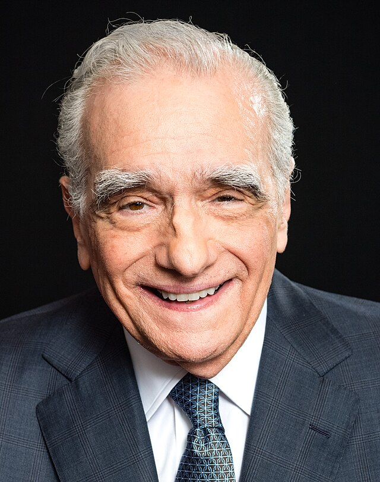
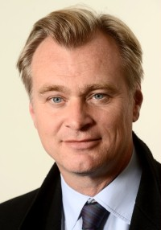
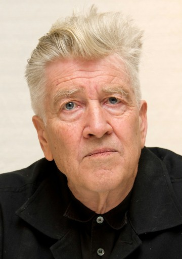
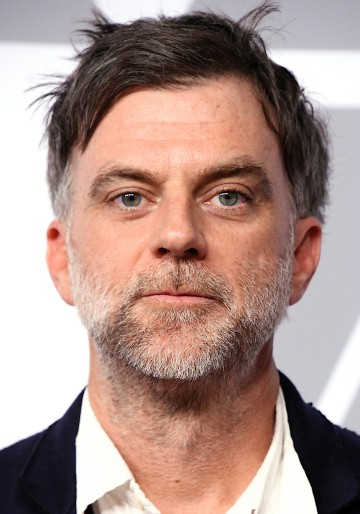

Reżyserzy nominowani do Oscara
|

Martin Scorsese, jeden z najbardziej wpływowych reżyserów w historii kina, był nominowany do Oscara 14 razy. Mimo że zdobył Oscara za reżyserię filmu "Infiltracja" (2006), wiele jego wcześniejszych prac, takich jak "Taksówkarz", "Wściekły byk" czy "Chłopcy z ferajny", zostało tylko nominowanych. Jego filmy często eksplorują temat moralnych dylematów i przemocy. |

Stanley Kubrick, choć nigdy nie zdobył Oscara za reżyserię, jest uważany za jednego z najwybitniejszych twórców w historii kina. Był nominowany za takie filmy jak "2001: Odyseja kosmiczna", "Mechaniczna pomarańcza" i "Lśnienie". Kubrick zasłynął jako twórca wizjonerski, który stale przesuwał granice filmowej narracji. |
|

Christopher Nolan, znany ze swoich złożonych i innowacyjnych filmów, był wielokrotnie nominowany do Oscara. Filmy takie jak "Incepcja", "Dunkierka" i "Interstellar" zdobyły uznanie za nowatorskie podejście do struktury narracyjnej i technologii filmowej, ale reżyser osobiście nie zdobył jeszcze Oscara za reżyserię. |
|

David Lynch, twórca unikalnych, surrealistycznych obrazów filmowych, takich jak "Blue Velvet", "Mulholland Drive" i "Zagubiona autostrada", był trzykrotnie nominowany do Oscara za reżyserię, ale nigdy nie zdobył tej nagrody. Jego filmy znane są z niekonwencjonalnych narracji i mrocznych, tajemniczych klimatów. |
|

Paul Thomas Anderson, autor takich filmów jak "Magnolia", "Aż poleje się krew" i "Mistrz", był wielokrotnie nominowany do Oscara, ale dotąd nie zdobył statuetki za reżyserię. Jego filmy charakteryzują się głęboką analizą psychologiczną postaci i skomplikowanymi relacjami międzyludzkimi. |